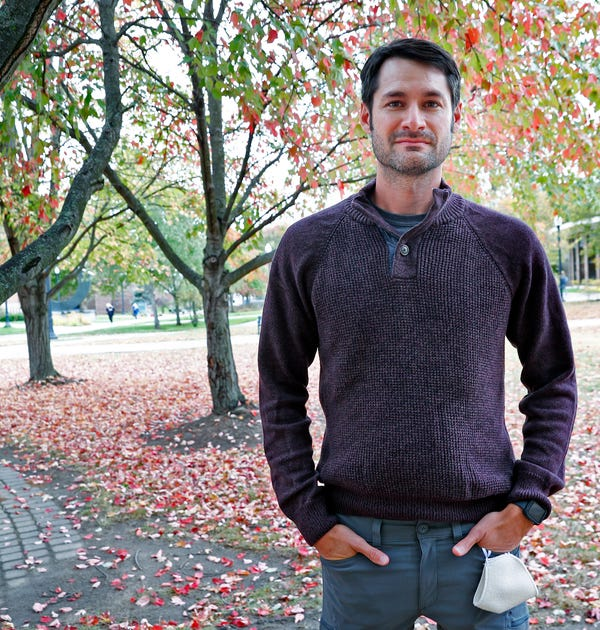

‘The world is watching Vigo County’
What the country can learn from an unlikely midwestern bellwether
TERRE HAUTE, Ind. — For more than a century, Vigo County had enjoyed a reputation as one of the country’s foremost electoral bellwethers.
Since 1888, the county in western Indiana has been a mirror of American politics; In all but two presidential elections, its voters chose the winning candidate, and are so politically fluid that they seem to regularly swing from Democrat to Repulican and back again.
The small, rural county — Terre Haute, the county seat, is only the 13th-largest city in indiana — has offered an unlikely glimpse into the mind of the American voter, reflecting the rest of the nation during election season and mystifying residents and national politicos alike.
“It’s hard to wrap your head around a county that most recently had voted for President Obama on two occasions, then turns around and votes in an overwhelming way for President Trump,” said Joe Etling, chair of the county’s Democratic Party. “It’s pretty difficult to put all that together.”
The last time Vigo voters were wrong was 1952, when the county went for Adlai Stevenson and the nation elected Dwight D. Eisenhower. The only other time since 1888 the county failed to pick the winner was in 1908, when William Howard Taft defeated William Jennings Bryan.
And while Vigo’s voters have been picked the winner in nearly every election for the past 100 years, this year was different. When the country went for Democratic candidate Joe Biden, the county broke overwhelmingly in favor of incumbent President Donald Trump.
Nonetheless, interest in the peculiar Midwestern bellwether, like it does almost every election cycle, renewed this year, once again raising the question of what, exactly, makes this place so presidentially unique –– and if America can learn something from it.
Peripheral voters, independents, and political fluidity
Matt Bergbower, a political science professor at Indiana State University in Terre Haute, said “peripheral” and independent voters might contribute to Vigo County’s oddity.
Peripheral voters, he said, are those who sit out the midterms but vote in presidential elections. They are loosely politically engaged, and aren’t tied strongly to a party, making them more easily swayed by the candidates and campaigns.
“Peripheral voters are, for lack of a better word, persuadable by candidates or persuadable by the mood of the nation,” Bergbower said.
Not only can this be seen in Vigo voters’ choices at the national level, but in local politics, too. Voters aren’t afraid to swing between parties, and yard signs lining Terre Haute’s streets leading up to the election showed support for Donald Trump alongside Democratic candidates for Vigo County Clerk and other local seats.
TK: AN EXPERT ON HUMAN THOUGHT? ABLE TO TALK ABOUT WHY PEOPLE CHANGE THEIR MIND AND HOW?
Campaign messaging can be particularly persuasive to these voters, and likely played a role in shifting them from Obama to Trump in 2016, said Etling.
The message from President Trump’s campaign, albeit very different, had similar themes to President Obama’s. Each of them promised a better life.
“The message coming from Trump had similarities about hope,” Etling said. “Not that he was selling hope, but he was saying, ‘your life is going to be better if I'm president. It’s going to be great again around here.’ In that regard, it was comparable to what President Obama had in his campaigns.”
“It was a similar message,” he said, “that just flipped the script.”
Norman Lowery, a septuagenarian from Vigo County, said Trump struck a nerve with voters who were tired of traditional politicians not getting things done. The president’s vow to shake up Washington and “drain the swamp” captivated local voters.
“People wanted to believe that it was going to be different,” he said. “They could see he was different. He wasn’t a traditional political candidate. They had great expectations for what would occur the next four years.”
People over party
Perhaps Vigo County owes its streak to the fact that many residents value people over parties, and fluctuate from election to election.
Marie Belzile-Theisz, an advanced placement U.S. history teacher running for county council at-large, said residents are looking to do what’s best for the county, and will elect whoever can make that happen –– Democrat or Republican.
“I do think in Vigo County, we’re small enough that a lot of people will look beyond the party,” she said. “I have some friends who are very strongly Republican, but will support me 100%. I think it’s because they look at the person.”
This political fluidity is exemplified by the yard signs that line Terre Haute’s neighborhoods. It’s not uncommon to see Trump 2020 signs followed by signs for local Democrats, and vice versa.
Michael Conley, a receptionist at a local healthcare facility, cast his vote at an early voting center in Terre Haute. The 39-year-old voted for President Trump, but also voted for a number of Democrats at the local level.
“I generally err on the side of conservatism,” Conley said. “That being said, I am absolutely willing to hear from anyone, and if I like what someone has to say and what they’re offering, I’d be silly not to vote for them. In my opinion, a straight ticket is just not the way to go.”
Conley’s father, a union member, was always encouraged to vote for Democrats, but never thought that was right, a philosophy he passed onto his son. He taught Conley to vote for someone not because someone tells him to, but because of his conscience.
“I think that, in a nutshell, is what we vote for –– or what we should vote for,” Conley said. “It should be our conscience. It should be because we feel like our family, community, state, and country is going to be better for it.”
“I will vote my conscience,” Conley added. “I don’t care what party.”
TK: THIS IS PROBABLY A GOOD PLACE TO ZOOM OUT A BIT AND GIVE SOME CONTEXT ON HOW RARE THIS KIND OF TICKET SPLITTING IS IN THE U.S.
Demographics
While many residents point to the county’s demographics as the reason for its predictive streak, racial demography lends an imperfect explanation, as Vigo County is not an exact reflection of the United States.
The county is far whiter than the rest of the nation, with 85% of its population composed of white, non-hispanic people. By contrast, the United States is 60% non-hispanic white. It also has a lower percentage of Black and Latinx people than the country does as a whole, making it fall short of the ideal American microcosm.
More telling than racial demographics is the county’s mix of urban and rural communities and young and old populations.
TK: A BETTER SECTION FILLED WITH URBAN/RURAL EXPLANATION AND AGE DEMOGRAPHICS. + DATA VISUALIZATION
“With the size of the county, the number of institutions of higher education in Vigo County also presents faculty, staff, students that are probably being taught to think critically and keep open minds, so that may play a role as well,” Etling said.
Four colleges –– Indiana State University, Ivy Tech Community College, Rose-Hulman Institute of Technology, and Saint Mary-of-the-Woods –– call Vigo County home, and students are more likely to vote for Democrats.
Terre Haute, the county’s largest town at about 60,000 people (almost half of the county’s total population), also adds blue to an otherwise red county, as urban voters are more likely to vote for Democrats.
So while Vigo County isn’t a perfect reflection of the United States, its mix of Democrats, Republicans, Independents and peripheral voters; older people and college students, city dwellers and farmers, can offer insight into its voting patterns.
But then again, Bergbower said, maybe it’s just dumb luck, a streak built on odd chance.
“I don’t know if others are true believers of our bellwether status,” Bergbower said. “I’m thinking there's some dumb luck involved.”
TK: MORE INTERWOVEN DETAILS ON HOW AMERICA MIGHT BENEFIT FROM THINKING LIKE VIGO COUNTY ??

Pellentesque habitant morbi tristique senectus et netus et malesuada fames ac turpis egestas. Vestibulum tortor quam, feugiat vitae, ultricies eget, tempor sit amet, ante. Donec eu libero sit amet quam egestas semper. Aenean ultricies mi vitae est. Mauris placerat eleifend leo. Quisque sit amet est et sapien ullamcorper pharetra. Vestibulum erat wisi, condimentum sed, commodo vitae, ornare sit amet, wisi. Aenean fermentum, elit eget tincidunt condimentum, eros ipsum rutrum orci, sagittis tempus lacus enim ac dui. Donec non enim in turpis pulvinar facilisis. Ut felis. Praesent dapibus, neque id cursus faucibus, tortor neque egestas augue, eu vulputate magna eros eu erat. Aliquam erat volutpat. Nam dui mi, tincidunt quis, accumsan porttitor, facilisis luctus, metus